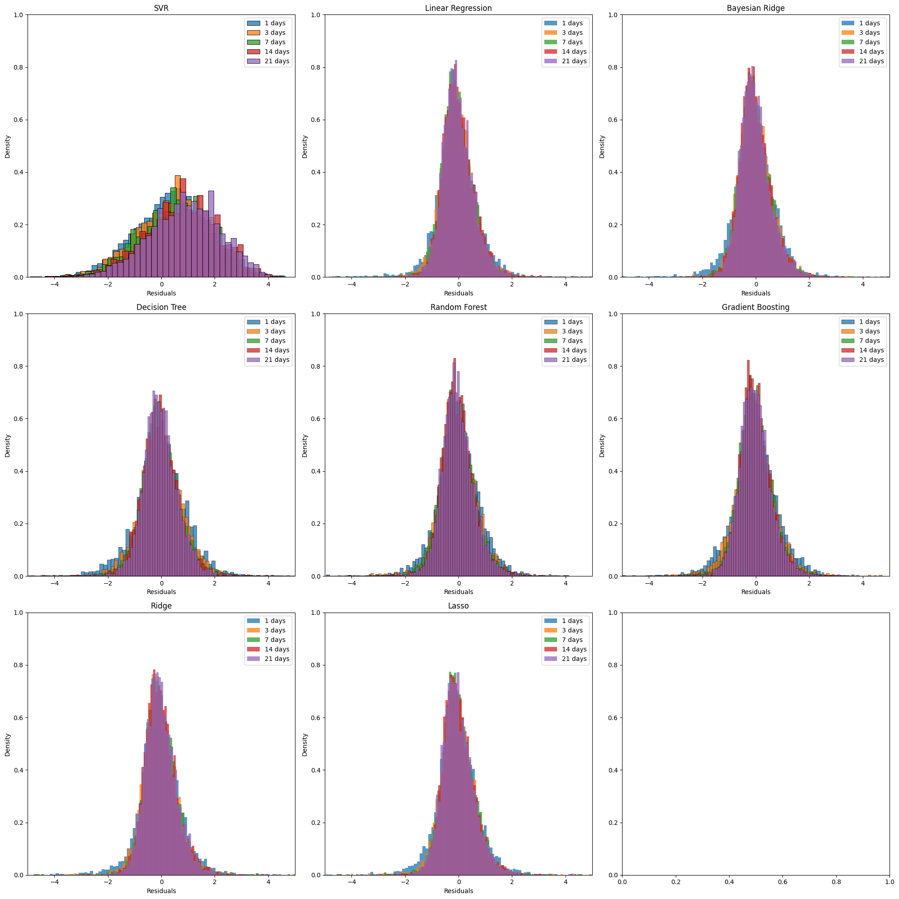
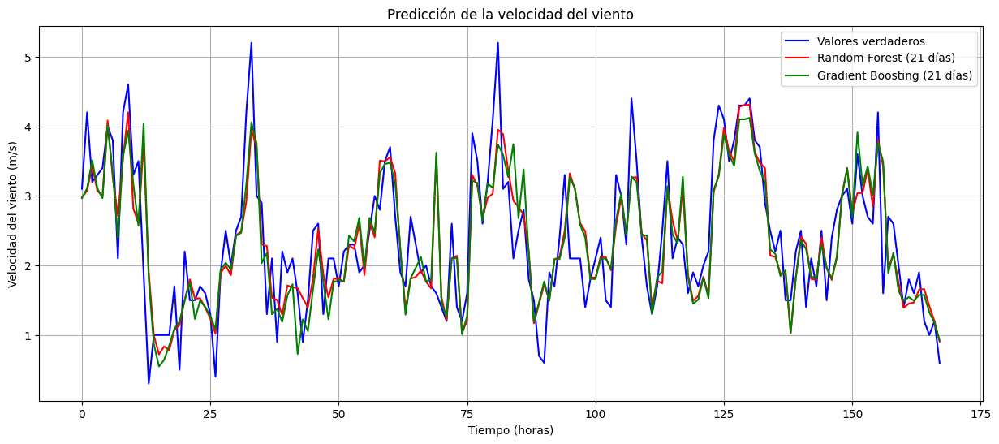

Wind Model#
import pandas as pd
import numpy as np
from statsmodels.stats.outliers_influence import variance_inflation_factor
from sklearn.linear_model import LinearRegression, Lasso, Ridge, BayesianRidge
from sklearn.tree import DecisionTreeRegressor
from sklearn.ensemble import RandomForestRegressor, GradientBoostingRegressor
from sklearn.metrics import mean_absolute_percentage_error, mean_squared_error, r2_score
from sklearn.neighbors import KNeighborsRegressor
from sklearn.preprocessing import MinMaxScaler, StandardScaler
from sklearn.svm import SVR
from skopt.space import Real, Categorical, Integer
from skopt import BayesSearchCV
from sklearn.pipeline import Pipeline
from copy import deepcopy
from time import time
import os
import pickle
import warnings
warnings.filterwarnings('ignore')
---------------------------------------------------------------------------
ModuleNotFoundError Traceback (most recent call last)
Cell In[1], line 3
1 import pandas as pd
2 import numpy as np
----> 3 from statsmodels.stats.outliers_influence import variance_inflation_factor
4 from sklearn.linear_model import LinearRegression, Lasso, Ridge, BayesianRidge
5 from sklearn.tree import DecisionTreeRegressor
ModuleNotFoundError: No module named 'statsmodels'
df_wind = pd.read_csv('data_treino_dv_df_2000_2010_new.csv')
df_wind.head()
| Hora_UTC | Direccion_Viento_Grados | Velocidad_Viento_m_s | Humedad_Max_Hora_Anterior | Humedad_Min_Hora_Anterior | Temperatura_Max_Hora_Anterior_C | Temperatura_Min_Hora_Anterior_C | Humedad_Relativa_Horaria | Presion_Atmosferica_Estacion_mB | Precipitacion_Total_Horario_mm | Viento_Rajada_Maxima_m_s | Presion_Atmosferica_Max_Hora_Anterior_mB | Presion_Atmosferica_Min_Hora_Anterior_mB | |
|---|---|---|---|---|---|---|---|---|---|---|---|---|---|
| 0 | 12:00 | 0.809017 | 1.8 | 69.0 | 60.0 | 22.6 | 20.7 | 61.0 | 888.2 | 0.0 | 3.8 | 888.2 | 887.7 |
| 1 | 13:00 | 0.965926 | 2.7 | 62.0 | 55.0 | 24.2 | 22.5 | 55.0 | 888.4 | 0.0 | 4.7 | 888.4 | 888.2 |
| 2 | 14:00 | 0.891007 | 2.0 | 56.0 | 50.0 | 25.5 | 24.3 | 51.0 | 888.1 | 0.0 | 4.9 | 888.4 | 888.1 |
| 3 | 15:00 | 0.848048 | 2.5 | 52.0 | 44.0 | 27.4 | 25.0 | 44.0 | 887.4 | 0.0 | 5.8 | 888.1 | 887.4 |
| 4 | 16:00 | 0.224951 | 2.4 | 50.0 | 43.0 | 27.1 | 25.5 | 46.0 | 886.5 | 0.0 | 5.8 | 887.4 | 886.5 |
Preprocesamiento#
def VIF_calculation(X):
"""Calculate the Variance Inflation Factor (VIF) for each variable in the dataset"""
VIF = pd.DataFrame()
VIF["variable"] = X.columns
VIF["VIF"] = [variance_inflation_factor(X.values, i) for i in range(X.shape[1])]
VIF = VIF.sort_values('VIF', ascending=False).reset_index(drop = True)
return(VIF)
def delete_multicollinearity(df, target_name, VIF_threshold):
"""Delete multicollinearity from the dataset"""
X = df.drop(target_name, axis=1)
VIF_mat = VIF_calculation(X)
n_VIF = VIF_mat["VIF"][0]
if (n_VIF <= VIF_threshold):
print("There is no multicollinearity!")
else:
while (n_VIF > VIF_threshold):
print(f'Dropped column {VIF_mat["variable"][0]} with VIF: {round(VIF_mat["VIF"][0], 1)}')
X = X.drop(VIF_mat["variable"][0], axis=1)
VIF_mat = VIF_calculation(X)
n_VIF = VIF_mat["VIF"][0]
return X
import datetime as dt
start_date = dt.datetime(2000, 1, 1, int(df_wind['Hora_UTC'][0][:2]))
df_wind['Date'] = [start_date + dt.timedelta(hours=i) for i in range(len(df_wind['Hora_UTC']))]
df_VIF = df_wind .drop(columns=['Date', 'Hora_UTC'])
df_wind_preprocessed = delete_multicollinearity(df_VIF, 'Velocidad_Viento_m_s', 10)
df_wind_preprocessed = pd.concat([df_wind_preprocessed, df_wind[['Velocidad_Viento_m_s', 'Date', 'Hora_UTC']]], axis=1)
Dropped column Presion_Atmosferica_Min_Hora_Anterior_mB with VIF: 965371.7
Dropped column Presion_Atmosferica_Max_Hora_Anterior_mB with VIF: 222364.7
Dropped column Temperatura_Max_Hora_Anterior_C with VIF: 2402.4
Dropped column Humedad_Relativa_Horaria with VIF: 589.2
Dropped column Humedad_Max_Hora_Anterior with VIF: 310.1
Dropped column Presion_Atmosferica_Estacion_mB with VIF: 132.0
Dropped column Temperatura_Min_Hora_Anterior_C with VIF: 12.6
df_wind_preprocessed['Hora_UTC'] = df_wind_preprocessed['Hora_UTC'].str.split(':').str[0]
print(df_wind_preprocessed.shape)
print(df_wind_preprocessed.columns.to_list())
(87693, 7)
['Direccion_Viento_Grados', 'Humedad_Min_Hora_Anterior', 'Precipitacion_Total_Horario_mm', 'Viento_Rajada_Maxima_m_s', 'Velocidad_Viento_m_s', 'Date', 'Hora_UTC']
Modelo#
def create_model_dict(model, scaler_options, grid, n_days):
return {
'model': model,
'scalers': {
'scaler': Categorical(scaler_options)
},
'grid': grid,
'best_params': {},
'n_days': n_days
}
n_col = df_wind.shape[1]
models_dict = {
'SVR': create_model_dict(
SVR(),
[MinMaxScaler(), StandardScaler()],
{
'model__C': Real(0.0001, 10000),
'model__epsilon': Real(0.0001, 10000),
},
[1, 3, 7, 14, 21]
),
'Linear Regression': create_model_dict(
LinearRegression(),
[None, MinMaxScaler(), StandardScaler()],
{},
[1, 3, 7, 14, 21]
),
'Bayesian Ridge': create_model_dict(
BayesianRidge(),
[None, MinMaxScaler(), StandardScaler()],
{
'model__alpha_1': (0.000001, 0.01),
'model__alpha_2': (0.000001, 0.01),
'model__lambda_1': (0.000001, 0.01),
'model__lambda_2': (0.000001, 0.01),
},
[1, 3, 7, 14, 21]
),
'Decision Tree': create_model_dict(
DecisionTreeRegressor(random_state=42),
[None],
{
'model__max_depth': Integer(1, n_col),
},
[1, 3, 7, 14, 21]
),
'Random Forest': create_model_dict(
RandomForestRegressor(random_state=42),
[None],
{
'model__max_depth': Integer(1, n_col),
'model__n_estimators': Integer(10, 200)
},
[1, 3, 7, 14, 21]
),
'Gradient Boosting': create_model_dict(
GradientBoostingRegressor(random_state=42),
[None],
{
'model__max_depth': Integer(1, n_col),
'model__n_estimators': Integer(10, 200),
},
[1, 3, 7, 14, 21]
),
'Ridge': create_model_dict(
Ridge(random_state=42),
[None, MinMaxScaler(), StandardScaler()],
{
'model__alpha': Real(0.0001, 10000)
},
[1, 3, 7, 14, 21]
),
'Lasso': create_model_dict(
Lasso(random_state=42),
[None, MinMaxScaler(), StandardScaler()],
{
'model__alpha': Real(0.0001, 10000)
},
[1, 3, 7, 14, 21]
),
}
n_col = df_wind_preprocessed.shape[1]
models_dict = {
'SVR': {
'model': SVR(),
'scalers': {
'scaler': Categorical([MinMaxScaler(), StandardScaler()])
},
'grid': {
'model__C': Real(0.0001, 10000),
'model__epsilon': Real(0.0001, 10000),
},
'best_params': {},
'n_days': [1, 3, 7, 14, 21]
},
'Linear Regression': {
'model': LinearRegression(),
'scalers': {
'scaler': Categorical([None, MinMaxScaler(), StandardScaler()])
},
'grid': {},
'best_params': {},
'n_days': [1, 3, 7, 14, 21]
},
'Bayesian Ridge': {
'model': BayesianRidge(),
'scalers': {
'scaler': Categorical([None, MinMaxScaler(), StandardScaler()])
},
'grid': {
'model__alpha_1': (0.000001, 0.01),
'model__alpha_2': (0.000001, 0.01),
'model__lambda_1': (0.000001, 0.01),
'model__lambda_2': (0.000001, 0.01),
},
'best_params': {},
'n_days': [1, 3, 7, 14, 21]
},
'Decision Tree': {
'model': DecisionTreeRegressor(random_state=42),
'scalers': {
'scaler': Categorical([None])
},
'grid': {
'model__max_depth': Integer(1, n_col),
},
'best_params': {},
'n_days': [1, 3, 7, 14, 21]
},
'Random Forest': {
'model': RandomForestRegressor(random_state=42),
'scalers': {
'scaler': Categorical([None])
},
'grid': {
'model__max_depth': Integer(1, n_col),
'model__n_estimators': Integer(10, 200)
},
'best_params': {},
'n_days': [1, 3, 7, 14, 21]
},
'Gradient Boosting': {
'model': GradientBoostingRegressor(random_state=42),
'scalers': {
'scaler': Categorical([None])
},
'grid': {
'model__max_depth': Integer(1, n_col),
'model__n_estimators': Integer(10, 200),
},
'best_params': {},
'n_days': [1, 3, 7, 14, 21]
},
'Ridge': {
'model': Ridge(random_state=42),
'scalers': {
'scaler': Categorical([None, MinMaxScaler(), StandardScaler()])
},
'grid': {
'model__alpha': Real(0.0001, 10000)
},
'best_params': {},
'n_days': [1, 3, 7, 14, 21]
},
'Lasso': {
'model': Lasso(random_state=42),
'scalers': {
'scaler': Categorical([None, MinMaxScaler(), StandardScaler()])
},
'grid': {
'model__alpha': Real(0.0001, 10000)
},
'best_params': {},
'n_days': [1, 3, 7, 14, 21]
},
}
results_dict = {
name:{
numDays: {
'model': None, 'pred': [], 'test': [], 'cpu_time': None, 'MAPEs': [], 'R2s': [], 'RMSEs': []
} for numDays in models_dict[name]['n_days']
} for name in models_dict
}
print(results_dict)
{'SVR': {1: {'model': None, 'pred': [], 'test': [], 'cpu_time': None, 'MAPEs': [], 'R2s': [], 'RMSEs': []}, 3: {'model': None, 'pred': [], 'test': [], 'cpu_time': None, 'MAPEs': [], 'R2s': [], 'RMSEs': []}, 7: {'model': None, 'pred': [], 'test': [], 'cpu_time': None, 'MAPEs': [], 'R2s': [], 'RMSEs': []}, 14: {'model': None, 'pred': [], 'test': [], 'cpu_time': None, 'MAPEs': [], 'R2s': [], 'RMSEs': []}, 21: {'model': None, 'pred': [], 'test': [], 'cpu_time': None, 'MAPEs': [], 'R2s': [], 'RMSEs': []}}, 'Linear Regression': {1: {'model': None, 'pred': [], 'test': [], 'cpu_time': None, 'MAPEs': [], 'R2s': [], 'RMSEs': []}, 3: {'model': None, 'pred': [], 'test': [], 'cpu_time': None, 'MAPEs': [], 'R2s': [], 'RMSEs': []}, 7: {'model': None, 'pred': [], 'test': [], 'cpu_time': None, 'MAPEs': [], 'R2s': [], 'RMSEs': []}, 14: {'model': None, 'pred': [], 'test': [], 'cpu_time': None, 'MAPEs': [], 'R2s': [], 'RMSEs': []}, 21: {'model': None, 'pred': [], 'test': [], 'cpu_time': None, 'MAPEs': [], 'R2s': [], 'RMSEs': []}}, 'Bayesian Ridge': {1: {'model': None, 'pred': [], 'test': [], 'cpu_time': None, 'MAPEs': [], 'R2s': [], 'RMSEs': []}, 3: {'model': None, 'pred': [], 'test': [], 'cpu_time': None, 'MAPEs': [], 'R2s': [], 'RMSEs': []}, 7: {'model': None, 'pred': [], 'test': [], 'cpu_time': None, 'MAPEs': [], 'R2s': [], 'RMSEs': []}, 14: {'model': None, 'pred': [], 'test': [], 'cpu_time': None, 'MAPEs': [], 'R2s': [], 'RMSEs': []}, 21: {'model': None, 'pred': [], 'test': [], 'cpu_time': None, 'MAPEs': [], 'R2s': [], 'RMSEs': []}}, 'Decision Tree': {1: {'model': None, 'pred': [], 'test': [], 'cpu_time': None, 'MAPEs': [], 'R2s': [], 'RMSEs': []}, 3: {'model': None, 'pred': [], 'test': [], 'cpu_time': None, 'MAPEs': [], 'R2s': [], 'RMSEs': []}, 7: {'model': None, 'pred': [], 'test': [], 'cpu_time': None, 'MAPEs': [], 'R2s': [], 'RMSEs': []}, 14: {'model': None, 'pred': [], 'test': [], 'cpu_time': None, 'MAPEs': [], 'R2s': [], 'RMSEs': []}, 21: {'model': None, 'pred': [], 'test': [], 'cpu_time': None, 'MAPEs': [], 'R2s': [], 'RMSEs': []}}, 'Random Forest': {1: {'model': None, 'pred': [], 'test': [], 'cpu_time': None, 'MAPEs': [], 'R2s': [], 'RMSEs': []}, 3: {'model': None, 'pred': [], 'test': [], 'cpu_time': None, 'MAPEs': [], 'R2s': [], 'RMSEs': []}, 7: {'model': None, 'pred': [], 'test': [], 'cpu_time': None, 'MAPEs': [], 'R2s': [], 'RMSEs': []}, 14: {'model': None, 'pred': [], 'test': [], 'cpu_time': None, 'MAPEs': [], 'R2s': [], 'RMSEs': []}, 21: {'model': None, 'pred': [], 'test': [], 'cpu_time': None, 'MAPEs': [], 'R2s': [], 'RMSEs': []}}, 'Gradient Boosting': {1: {'model': None, 'pred': [], 'test': [], 'cpu_time': None, 'MAPEs': [], 'R2s': [], 'RMSEs': []}, 3: {'model': None, 'pred': [], 'test': [], 'cpu_time': None, 'MAPEs': [], 'R2s': [], 'RMSEs': []}, 7: {'model': None, 'pred': [], 'test': [], 'cpu_time': None, 'MAPEs': [], 'R2s': [], 'RMSEs': []}, 14: {'model': None, 'pred': [], 'test': [], 'cpu_time': None, 'MAPEs': [], 'R2s': [], 'RMSEs': []}, 21: {'model': None, 'pred': [], 'test': [], 'cpu_time': None, 'MAPEs': [], 'R2s': [], 'RMSEs': []}}, 'Ridge': {1: {'model': None, 'pred': [], 'test': [], 'cpu_time': None, 'MAPEs': [], 'R2s': [], 'RMSEs': []}, 3: {'model': None, 'pred': [], 'test': [], 'cpu_time': None, 'MAPEs': [], 'R2s': [], 'RMSEs': []}, 7: {'model': None, 'pred': [], 'test': [], 'cpu_time': None, 'MAPEs': [], 'R2s': [], 'RMSEs': []}, 14: {'model': None, 'pred': [], 'test': [], 'cpu_time': None, 'MAPEs': [], 'R2s': [], 'RMSEs': []}, 21: {'model': None, 'pred': [], 'test': [], 'cpu_time': None, 'MAPEs': [], 'R2s': [], 'RMSEs': []}}, 'Lasso': {1: {'model': None, 'pred': [], 'test': [], 'cpu_time': None, 'MAPEs': [], 'R2s': [], 'RMSEs': []}, 3: {'model': None, 'pred': [], 'test': [], 'cpu_time': None, 'MAPEs': [], 'R2s': [], 'RMSEs': []}, 7: {'model': None, 'pred': [], 'test': [], 'cpu_time': None, 'MAPEs': [], 'R2s': [], 'RMSEs': []}, 14: {'model': None, 'pred': [], 'test': [], 'cpu_time': None, 'MAPEs': [], 'R2s': [], 'RMSEs': []}, 21: {'model': None, 'pred': [], 'test': [], 'cpu_time': None, 'MAPEs': [], 'R2s': [], 'RMSEs': []}}}
path_tuning = 'models/model_t.pkl'
if not os.path.exists(path_tuning):
X = df_wind_preprocessed.drop(columns=['Velocidad_Viento_m_s', 'Date'])
y = df_wind_preprocessed['Velocidad_Viento_m_s']
for name, model_dict in models_dict.items():
print(f"Tuning {name}...")
param_grid = {**model_dict['scalers'], **model_dict['grid']}
for numDays in model_dict['n_days']:
X_train = X.iloc[0:numDays*24]
y_train = y.iloc[0:numDays*24]
steps = [
('scaler', None),
('model', deepcopy(model_dict['model']))
]
pipeline = Pipeline(steps)
search_cv = BayesSearchCV(pipeline, search_spaces=param_grid, n_iter=20, scoring='r2', cv=5, n_jobs=-1, random_state=42)
start = time()
search_cv.fit(X_train, y_train)
end = time()
results_dict[name][numDays]['model'] = search_cv.best_estimator_
model_dict['best_params'][numDays] = search_cv.best_params_
print(f"{numDays} days => {round(end - start, 1)}s => {search_cv.best_params_}")
print()
# Guarda los resultados en un archivo pickle
with open(path_tuning, 'wb') as f:
pickle.dump(results_dict, f)
else:
# Si el archivo pickle ya existe, carga los resultados
with open(path_tuning, 'rb') as f:
results_dict = pickle.load(f)
# Imprime los mejores parámetros para cada modelo
for name, model_dict in models_dict.items():
print(f"Best params for {name}: ")
for numDays in model_dict['n_days']:
print(f"{numDays} days => {results_dict[name][numDays]['model'].named_steps['model']}")
print()
Tuning SVR...
1 days => 6.2s => OrderedDict([('model__C', 4101.0396475227435), ('model__epsilon', 7277.257459000677), ('scaler', StandardScaler())])
3 days => 5.9s => OrderedDict([('model__C', 8373.883571794007), ('model__epsilon', 8833.152785477094), ('scaler', MinMaxScaler())])
7 days => 6.1s => OrderedDict([('model__C', 4101.0396475227435), ('model__epsilon', 7277.257459000677), ('scaler', StandardScaler())])
14 days => 6.1s => OrderedDict([('model__C', 6617.58011524121), ('model__epsilon', 2458.941316906374), ('scaler', MinMaxScaler())])
21 days => 6.2s => OrderedDict([('model__C', 4101.0396475227435), ('model__epsilon', 7277.257459000677), ('scaler', StandardScaler())])
Tuning Linear Regression...
1 days => 5.0s => OrderedDict([('scaler', StandardScaler())])
3 days => 6.0s => OrderedDict([('scaler', StandardScaler())])
7 days => 5.5s => OrderedDict([('scaler', StandardScaler())])
14 days => 5.9s => OrderedDict([('scaler', MinMaxScaler())])
21 days => 5.3s => OrderedDict([('scaler', MinMaxScaler())])
Tuning Bayesian Ridge...
1 days => 8.1s => OrderedDict([('model__alpha_1', 0.01), ('model__alpha_2', 1e-06), ('model__lambda_1', 1e-06), ('model__lambda_2', 0.01), ('scaler', StandardScaler())])
3 days => 7.7s => OrderedDict([('model__alpha_1', 1e-06), ('model__alpha_2', 0.01), ('model__lambda_1', 0.01), ('model__lambda_2', 0.01), ('scaler', None)])
7 days => 6.9s => OrderedDict([('model__alpha_1', 1e-06), ('model__alpha_2', 1e-06), ('model__lambda_1', 0.01), ('model__lambda_2', 1e-06), ('scaler', None)])
14 days => 7.1s => OrderedDict([('model__alpha_1', 1e-06), ('model__alpha_2', 0.007012789565174271), ('model__lambda_1', 0.01), ('model__lambda_2', 1e-06), ('scaler', None)])
21 days => 6.5s => OrderedDict([('model__alpha_1', 0.001892527108455424), ('model__alpha_2', 0.00610711733050379), ('model__lambda_1', 0.009904734884116459), ('model__lambda_2', 5.421150132555068e-06), ('scaler', None)])
Tuning Decision Tree...
1 days => 5.7s => OrderedDict([('model__max_depth', 4), ('scaler', None)])
3 days => 7.3s => OrderedDict([('model__max_depth', 3), ('scaler', None)])
7 days => 7.5s => OrderedDict([('model__max_depth', 3), ('scaler', None)])
14 days => 6.3s => OrderedDict([('model__max_depth', 4), ('scaler', None)])
21 days => 6.3s => OrderedDict([('model__max_depth', 4), ('scaler', None)])
Tuning Random Forest...
1 days => 11.3s => OrderedDict([('model__max_depth', 14), ('model__n_estimators', 194), ('scaler', None)])
3 days => 11.4s => OrderedDict([('model__max_depth', 7), ('model__n_estimators', 200), ('scaler', None)])
7 days => 10.8s => OrderedDict([('model__max_depth', 8), ('model__n_estimators', 10), ('scaler', None)])
14 days => 11.8s => OrderedDict([('model__max_depth', 5), ('model__n_estimators', 72), ('scaler', None)])
21 days => 13.3s => OrderedDict([('model__max_depth', 4), ('model__n_estimators', 200), ('scaler', None)])
Tuning Gradient Boosting...
1 days => 9.5s => OrderedDict([('model__max_depth', 2), ('model__n_estimators', 200), ('scaler', None)])
3 days => 9.0s => OrderedDict([('model__max_depth', 4), ('model__n_estimators', 200), ('scaler', None)])
7 days => 8.6s => OrderedDict([('model__max_depth', 1), ('model__n_estimators', 119), ('scaler', None)])
14 days => 9.2s => OrderedDict([('model__max_depth', 1), ('model__n_estimators', 157), ('scaler', None)])
21 days => 9.0s => OrderedDict([('model__max_depth', 1), ('model__n_estimators', 122), ('scaler', None)])
Tuning Ridge...
1 days => 8.7s => OrderedDict([('model__alpha', 0.0001), ('scaler', MinMaxScaler())])
3 days => 8.2s => OrderedDict([('model__alpha', 0.0001), ('scaler', MinMaxScaler())])
7 days => 8.1s => OrderedDict([('model__alpha', 0.0001), ('scaler', MinMaxScaler())])
14 days => 8.7s => OrderedDict([('model__alpha', 0.0001), ('scaler', MinMaxScaler())])
21 days => 9.1s => OrderedDict([('model__alpha', 0.0001), ('scaler', None)])
Tuning Lasso...
1 days => 5.5s => OrderedDict([('model__alpha', 0.0001), ('scaler', MinMaxScaler())])
3 days => 5.6s => OrderedDict([('model__alpha', 0.0001), ('scaler', MinMaxScaler())])
7 days => 5.7s => OrderedDict([('model__alpha', 0.0001), ('scaler', MinMaxScaler())])
14 days => 5.7s => OrderedDict([('model__alpha', 0.0001), ('scaler', MinMaxScaler())])
21 days => 5.8s => OrderedDict([('model__alpha', 0.0001), ('scaler', MinMaxScaler())])
def model_evaluation_lr(y_test, y_pred):
mape = round(mean_absolute_percentage_error(y_test, y_pred), 3)
rmse = round(np.sqrt(mean_squared_error(y_test, y_pred)), 3)
r2 = round(r2_score(y_test, y_pred), 3)
return {'mape': mape, 'rmse': rmse, 'r2': r2}
path_results = 'models/model_results.pkl'
if not os.path.exists(path_results):
dict_pred = {}
X = df_wind_preprocessed.drop(columns=['Velocidad_Viento_m_s', 'Date'])
y = df_wind_preprocessed['Velocidad_Viento_m_s']
for i, name in enumerate(models_dict):
model_dict = models_dict[name]
print(f"Training {name}...")
for numDays in model_dict['n_days']:
best_params_cleaned = {k.replace('model__', ''): v for k, v in model_dict['best_params'][numDays].items() if k.startswith('model__')}
pipeline = Pipeline(
[
('scaler', model_dict['best_params'][numDays]['scaler']),
('model', deepcopy(model_dict['model']).set_params(**best_params_cleaned)),
]
)
print(f'{numDays} days', end='')
start = time()
for j in range(0, df_wind_preprocessed.shape[0] - (numDays + 1)*24, 24):
X_train = X.iloc[j:j+numDays*24]
y_train = y.iloc[j:j+numDays*24]
X_valid = X.iloc[j+numDays*24:j+((numDays + 1)*24)]
y_valid = y.iloc[j+numDays*24:j+((numDays + 1)*24)]
pipeline.fit(X_train, y_train)
y_pred = pipeline.predict(X_valid)
eval_lr = model_evaluation_lr(y_pred, y_valid)
results_numDays = results_dict[name][numDays]
results_numDays['pred'] += y_pred.tolist()
results_numDays['test'] += y_valid.tolist()
results_numDays['MAPEs'].append(eval_lr['mape'])
results_numDays['R2s'].append(eval_lr['r2'])
results_numDays['RMSEs'].append(eval_lr['rmse'])
end = time()
cpu_time = round(end - start, 1)
print(f" => {cpu_time}s")
results_numDays['cpu_time'] = cpu_time
print()
with open(path_results, 'wb') as f:
pickle.dump(results_dict, f)
else:
with open(path_results, 'rb') as f:
results_dict = pickle.load(f)
Training SVR...
1 days => 53.9s
3 days => 57.7s
7 days => 58.5s
14 days => 19.7s
21 days => 21.2s
Training Linear Regression...
1 days => 19.9s
3 days => 19.1s
7 days => 19.3s
14 days => 19.7s
21 days => 20.6s
Training Bayesian Ridge...
1 days => 18.6s
3 days => 13.2s
7 days => 19.4s
14 days => 13.4s
21 days => 13.6s
Training Decision Tree...
1 days => 12.5s
3 days => 12.8s
7 days => 13.3s
14 days => 14.1s
21 days => 14.8s
Training Random Forest...
1 days => 970.1s
3 days => 1460.2s
7 days => 64.4s
14 days => 332.1s
21 days => 877.3s
Training Gradient Boosting...
1 days => 106.6s
3 days => 145.0s
7 days => 77.0s
14 days => 114.9s
21 days => 104.6s
Training Ridge...
1 days => 13.7s
3 days => 13.4s
7 days => 14.4s
14 days => 14.7s
21 days => 10.8s
Training Lasso...
1 days => 14.8s
3 days => 14.9s
7 days => 15.1s
14 days => 15.3s
21 days => 15.7s
results_overall = pd.DataFrame(columns=['Model', 'CPU time', 'MAPE', 'R2', 'RMSE'])
for name in results_dict:
model_dict = models_dict[name]
for numDays in model_dict['n_days']:
results = results_dict[name][numDays]
eval = model_evaluation_lr(results['pred'], results['test'])
new_row = {
'Model': f"{name} ({numDays} days)",
'CPU time': results['cpu_time'],
'MAPE': eval['mape'],
'R2': eval['r2'],
'RMSE': eval['rmse']
}
results_overall = pd.concat([results_overall, pd.DataFrame(new_row, index=[0])], ignore_index=True)
results_overall.sort_values('R2', ascending=False, inplace=True)
print(results_overall.to_string(index=False))
Model CPU time MAPE R2 RMSE
Bayesian Ridge (21 days) 13.6 2.720000e-01 0.721 0.622
Lasso (21 days) 15.7 2.840000e-01 0.720 0.625
Linear Regression (21 days) 20.6 2.840000e-01 0.720 0.625
Ridge (21 days) 10.8 2.840000e-01 0.720 0.625
Random Forest (21 days) 877.3 2.460000e-01 0.714 0.614
Random Forest (14 days) 332.1 2.610000e-01 0.714 0.622
Bayesian Ridge (7 days) 19.4 3.080000e-01 0.707 0.642
Gradient Boosting (14 days) 114.9 2.720000e-01 0.706 0.619
Gradient Boosting (21 days) 104.6 2.470000e-01 0.705 0.611
Bayesian Ridge (14 days) 13.4 3.760000e-01 0.688 0.673
Bayesian Ridge (3 days) 13.2 3.720000e-01 0.679 0.677
Decision Tree (21 days) 14.8 2.934614e+12 0.674 0.677
Random Forest (7 days) 64.4 4.168856e+11 0.673 0.675
Gradient Boosting (7 days) 77.0 3.320000e-01 0.671 0.646
Decision Tree (14 days) 14.1 5.481504e+12 0.663 0.695
Lasso (14 days) 15.3 3.540000e-01 0.625 0.779
Linear Regression (14 days) 19.7 2.870000e-01 0.622 0.785
Ridge (14 days) 14.7 2.880000e-01 0.622 0.785
Random Forest (3 days) 1460.2 2.850000e-01 0.620 0.698
Decision Tree (7 days) 13.3 3.793144e+12 0.611 0.729
Gradient Boosting (3 days) 145.0 6.880000e-01 0.591 0.762
Lasso (7 days) 15.1 5.150000e-01 0.577 0.865
Linear Regression (7 days) 19.3 3.680000e-01 0.574 0.871
Ridge (7 days) 14.4 3.630000e-01 0.574 0.871
Decision Tree (3 days) 12.8 1.648235e+13 0.542 0.809
Gradient Boosting (1 days) 106.6 8.630000e-01 0.435 0.869
Random Forest (1 days) 970.1 1.541484e+10 0.406 0.825
Decision Tree (1 days) 12.5 6.250718e+13 0.374 0.985
Lasso (3 days) 14.9 4.140000e-01 0.197 2.084
Ridge (3 days) 13.4 4.850000e-01 0.196 2.096
Linear Regression (3 days) 19.1 4.540000e-01 0.196 2.096
Bayesian Ridge (1 days) 18.6 5.900000e-01 0.130 2.463
Lasso (1 days) 14.8 1.274000e+00 0.117 2.847
Ridge (1 days) 13.7 8.480000e-01 0.116 2.857
Linear Regression (1 days) 19.9 7.940000e-01 0.116 2.858
SVR (1 days) 53.9 4.180000e-01 -1.839 1.309
SVR (3 days) 57.7 4.050000e-01 -3.953 1.380
SVR (7 days) 58.5 3.950000e-01 -7.742 1.453
SVR (14 days) 19.7 3.960000e-01 -11.344 1.551
SVR (21 days) 21.2 3.960000e-01 -13.630 1.611
import matplotlib.pyplot as plt
import seaborn as sns
import random as rd
fig, axs = plt.subplots(3, 3, figsize=(20, 20))
axs = axs.flatten()
for i, name in enumerate(results_dict):
for numDays in models_dict[name]['n_days']:
pred = results_dict[name][numDays]['pred']
test = results_dict[name][numDays]['test']
residuals = rd.sample([val_pred - val_test for val_pred, val_test in zip(pred, test)], 5000)
sns.histplot(residuals, ax=axs[i], label=f"{numDays} days", stat='density')
axs[i].set_title(f"{name}")
axs[i].set_xlabel('Residuals')
axs[i].set_ylabel('Density')
axs[i].set_xlim(-5, 5)
axs[i].set_ylim(0, 1)
axs[i].legend()
plt.tight_layout()
plt.show()

import random as rd
import matplotlib.pyplot as plt
rd.seed(42)
y_test_RF_21 = results_dict['Random Forest'][21]['test']
y_pred_RF_21 = results_dict['Random Forest'][21]['pred']
y_test_GB_21 = results_dict['Gradient Boosting'][21]['test']
y_pred_GB_21 = results_dict['Gradient Boosting'][21]['pred']
num_hours = 24 * 7
max_start_index = len(y_test_RF_21) - num_hours
idx_rd = rd.randint(0, max_start_index)
plt.figure(figsize=(15, 6))
plt.plot(y_test_RF_21[idx_rd:idx_rd + num_hours], label='Valores verdaderos', color='blue')
plt.plot(y_pred_RF_21[idx_rd:idx_rd + num_hours], label='Random Forest (21 días)', color='red')
plt.plot(y_pred_GB_21[idx_rd:idx_rd + num_hours], label='Gradient Boosting (21 días)', color='green')
plt.xlabel('Tiempo (horas)')
plt.ylabel('Velocidad del viento (m/s)')
plt.title('Predicción de la velocidad del viento')
plt.legend()
plt.grid(True)
plt.show()
